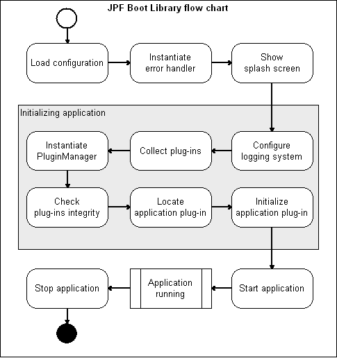

JPF Boot Bibliothek
Einführung
Eine JPF basierte Anwendung laufen zu lassen ist oftmals Routine, es kann aber etwas trickreich sein, besonders für Java Neulinge. Was müssen Java Entwickler gewöhnlich machen um eine JPF basierte Anwendung zu starten (stoppen)?
- laden der Anwendungskonfiguration aus der boot.properties
- alle verfügbaren Plug-ins einsammeln
- instanziieren und initialisieren des JPF Framework
- darstellen (laden) der verfügbaren Plug-ins
- aktivieren und starten des Hauptplug-ins (gewöhnlich Core)
- beim Verlassen der Anwendung das Framework anständig herunterfahren
Wie man sehen kann ist das eine recht generelle Tätigkeit, deren Schritte alle sehr gut formalisiert sind. So ist es möglich einmal eine Bibliothek zu schreiben und sie immer und immer wieder für den immer gleichen Zweck zu verwenden - laden, konfigurieren und starten der Anwendung. Diese Bibliothek ist die JPF Boot Library.

Benutzung
Die Bibliothek ist in eine eigene JAR-Datei verpackt, der jpf-boot.jar. Es gibt einige spezielle Einträge in der Manifest Datei dieser Datei, die der JVM sagen welche anderen Bibliotheken für diese JAR gebraucht werden (im Augenblick nur jpf.jar) und welche Klasse zu starten ist wenn man diese JAR ausführt - org.java.plugin.boot.Boot. Das macht die Benutzung dieser Bibliothek sehr einfach und ermöglicht das Starten der Anwendung durch einfaches Eintippen von
java -jar lib/jpf-boot.jarin der Konsole:
Hier eine typische Ordnerstruktur:
[APPLICATION_HOME_FOLDER]/ +- lib/ | +- commons-logging.jar | +- jpf.jar | +- jpf-boot.jar | +- log4j.jar +- plugins/ +- boot.properties +- log4j.properties +- run.bat +- run.sh
Bringen Sie Ihre Plug-ins im plugins Ordner unter und führen Sie das run-Skript aus. Der gesamte Startvorgang wird nun von der Bibliothek übernommen.
Wenn Sie kein Logging benötigen, können Sie log4j.jar und log4j.properties auch entfernen. Werfen Sie einen Blick auf JPF Boot Library javadoc um weitere Konfigurationsmöglichkeiten kennen zu lernen.
Schauen Sie sich die JPF-Demo application an, um ein funktionierendes Beispiel für die Benutzung der JPF Boot-Library zu sehen.